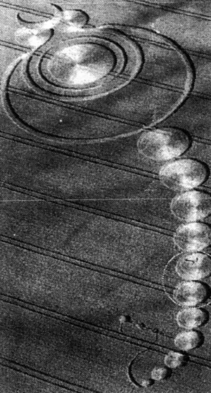

Un crop circle apparu en
Angleterre

Crop circle près du village
d'Avebury (Wiltshire)
Zhaoghuo Fourni à China Daily
A Wuchang (province de Heilongjiang, Chine), Meng Zhaoghuo (fermier) travaille à
l'extérieur de la ville, lorqu'il voit un flash métallique sur un flanc de montagne. Il va voir de plus près,
pensant au crash d'un hélicoptère, mais perd conscience. Cette nuit-là racontera-t-il, une humanoïde le visita.
Mesurant 3 m, dotée de 12 doigts et ayant les poils de ses jambes tressés, elle aurait fait l'amour avec lui,
pendant 40 mn, en lévitation. De retour, il apparaît totalement troublé et incapable de communiquer avec qui que ce
soit. Je ne croyais pas aux extraterrestres jusqu'à ce que je les rencontre, dira-t-il. Voir c'est croire.
Nous ne pouvons pas expliquer les ovnis et les extraterrestres parce que notre technologie n'est pas assez avancée.
Mais ça ne veut pas dire que ces choses n'existent pas. Zhaoghuo déclarera plus tard avoir fait une 2ème
rencontre avec d'autres extraterrestres, parlant chinois. Les extraterrestres me montrèrent un morceau de
cristal, à travers lequel j'ai vu des forêts, des icebergs et des combustibles fossiles sur la Terre, dit-il.
Ils me parlèrent de la situation actuelle des ressources de la Terre et m'avertirent sur l'importance de la
protection de l'environnement. Egalement : Ils dirent que dans 60 ans, un extraterrestre naîtra avec les
gènes d'un paysan terrien et que je pourrais le ou la rencontrerShi Bo: OVNI - Nouveaux dossiers chinois, Aldane, CP 100, CH-1216 CointrinZixuan, Zhang & Nilsson, Erik: "Calling
occupants of inter-planetary craft", China
Daily, 31 octobre 2010 < "Alien,
mon amour", Courrier International, 16 décembre 2010.